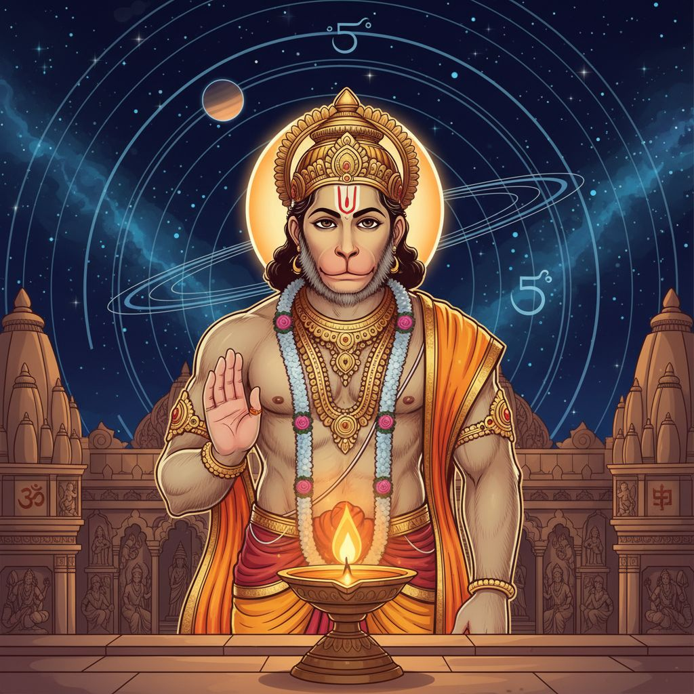

आज बहुत से लोग अपनी समस्याओं को अलग-अलग शब्दों में बताते हैं, पर उनकी जड़ अक्सर एक जैसी होती है: काम में रुकावट, बार-बार देरी, मन में भय, घर में भारीपन, नींद की अशांति और यह अनुभव कि जीवन किसी अदृश्य दबाव में चल रहा है। वैदिक ज्योतिष की भाषा में ऐसे चरणों को प्रायः शनि के कठिन प्रभाव, कर्मिक दबाव और अनुशासित उपायों की आवश्यकता से जोड़ा जाता है। वैदिक शास्त्र शनि को केवल कष्ट देने वाला ग्रह नहीं मानते। वे शनि को सत्य, विनम्रता, धैर्य, सेवा और उत्तरदायित्व का कठोर शिक्षक मानते हैं। इसी कारण शास्त्रीय और भक्ति परंपरा में हनुमान उपासना को शनि-संबंधी कष्टों से राहत का एक प्रमुख आधार माना गया है।

1. शनि का शास्त्रीय अर्थ: दंड या शुद्धि?
पुराणों और ज्योतिषीय परंपरा में शनि केवल दुख का संकेत नहीं हैं। वे कर्मफल के दाता, अनुशासन के रक्षक और जीवन की कमजोर नींव को उजागर करने वाली शक्ति हैं। जब जन्मपत्रिका, दशा या गोचर में शनि का दबाव बढ़ता है, तब जीवन की गति धीमी होकर व्यक्ति को अपने अहंकार, लापरवाही, असंतुलन, असत्य और अपूर्ण कर्तव्यों का सामना कराती है।
इसीलिए कठिन शनि काल में अक्सर ये अनुभव होते हैं:
- करियर, विवाह, धन या मान-सम्मान में देरी
- अकेलापन, थकान और मानसिक भारीपन
- जीवन को सरल और संयमित बनाने का दबाव
- कर्मिक ऋणों का उत्तरदायित्व के माध्यम से भुगतान
इस दृष्टि से शनि शत्रु नहीं, बल्कि ब्रह्मांडीय सुधार की शक्ति हैं।
2. शनि उपायों में हनुमान क्यों केंद्र में हैं?
वैदिक और भक्ति परंपरा बार-बार हनुमानजी को भय, बाधा, नकारात्मक ऊर्जा और ग्रहजन्य दबाव से सुरक्षा के केंद्र के रूप में प्रस्तुत करती है। इसका आध्यात्मिक अर्थ बहुत गहरा है। हनुमान शक्ति, भक्ति, विनम्रता, ब्रह्मचर्य, मानसिक स्थिरता और धर्म-सेवा के प्रतीक हैं। यही वे गुण हैं जिन्हें शनि व्यक्ति के भीतर जगाना चाहते हैं।
लोकप्रिय धार्मिक परंपरा में यह भाव मिलता है कि शनि स्वयं सच्चे हनुमान भक्तों पर कृपा करते हैं। इसका संकेत यह है कि शनि अहंकार को तोड़ते हैं और हनुमान भक्ति अहंकार को समर्पण में बदल देती है। शनि धैर्य की परीक्षा लेते हैं और हनुमान साहस देते हैं। शनि भय को सामने लाते हैं और हनुमान प्राण, श्रद्धा और स्थिरता का संचार करते हैं।
| शास्त्रीय संकेत | आध्यात्मिक अर्थ |
|---|---|
| शनि जीवन की गति धीमी करते हैं | साधक को धैर्य और उत्तरदायित्व सीखना पड़ता है |
| हनुमान सेवा में स्थित शक्ति हैं | उपाय भागना नहीं, बल्कि धर्मपूर्ण अनुशासन है |
| कर्मिक दबाव में भय बढ़ता है | हनुमान उपासना मन और प्राण को स्थिर करती है |
| शनि अहंकार को तोड़ते हैं | रामभक्ति के माध्यम से कष्ट का बोझ हल्का होता है |
3. आधुनिक जीवन में शास्त्र इसका क्या अर्थ निकालते हैं?
यदि शास्त्रीय भाषा को आज के जीवन में अनुवाद करें, तो शनि-प्रधान समय कई रूपों में दिख सकता है: बर्नआउट, अकेलापन, अत्यधिक चिंता, असफलता का डर, डिजिटल थकान, निराशा, आत्मविश्वास की कमी और लगातार विलंब। शास्त्र संभवतः कहेंगे कि ये केवल मानसिक घटनाएँ नहीं, बल्कि ऊर्जा और जीवन-व्यवस्था को पुनर्संतुलित करने का आह्वान भी हैं।
यह पुनर्संतुलन कुछ मूल बातों से शुरू होता है:
- दिनचर्या को अधिक नियमित और शांत बनाना
- अति-उत्तेजना, नशा, गपशप और समय की बर्बादी कम करना
- बुजुर्गों, श्रमिकों, गरीबों, पशुओं और जरूरतमंदों की सेवा करना
- सत्य बोलना, पर संयम के साथ
- परिणामों के प्रति भय घटाकर भक्ति को मजबूत करना
यहीं वैदिक काउंसलिंग उपयोगी बनती है। जब remedial astrology को आयुर्वेद, भक्ति, दिनचर्या और मानसिक स्थिरता के साथ जोड़ा जाता है, तभी उसका वास्तविक प्रभाव दिखता है।
4. हनुमान उपासना: बहु-स्तरीय उपाय
हनुमानजी की उपासना केवल एक धार्मिक क्रिया नहीं, बल्कि कई स्तरों पर कार्य करने वाला उपाय है:
- ज्योतिषीय स्तर पर: कठिन शनि प्रभाव, भय, बाधा और अदृश्य नकारात्मकता में यह पारंपरिक रूप से उपयोगी मानी जाती है।
- मनोवैज्ञानिक स्तर पर: हनुमान चालीसा, रामनाम या सुंदरकांड मन की बिखराहट को कम करते हैं।
- ऊर्जात्मक स्तर पर: भक्ति बिखरी हुई जीवन-शक्ति को साहस, मर्यादा और सुरक्षित कर्म में बदलती है।
- नैतिक स्तर पर: हनुमान सिखाते हैं कि शक्ति तभी शुभ है जब वह विनम्रता और सेवा में स्थित हो।
गहरा उपाय केवल “शनि को शांत” करना नहीं, बल्कि ऐसा व्यक्तित्व बनाना है जो शनि की परीक्षा को गरिमा के साथ धारण कर सके।
5. वैदिक काउंसलिंग इससे क्या सीखती है?
एक परिपक्व वैदिक काउंसलिंग दृष्टि हर कठिनाई को केवल साढ़ेसाती का भय बनाकर नहीं देखती। वह कुछ गहरे प्रश्न पूछती है:
- अनुशासन कहाँ टूटा है?
- मन किस भय या तुलना में फंसा हुआ है?
- कौन-सी जिम्मेदारियाँ टाली जा रही हैं?
- कौन-सी आदतें ओजस, ध्यान और श्रद्धा को कम कर रही हैं?
- कौन-सा देवता-आधारित साधना मार्ग व्यक्ति को फिर से स्थिर कर सकता है?
बहुत से लोगों के लिए इसका उत्तर हनुमान-केंद्रित उपाय, सात्त्विक दिनचर्या, मंत्र, सेवा और भावनात्मक ईमानदारी में मिलता है।
6. परंपरा-सम्मत व्यावहारिक उपाय
समकालीन जीवन के लिए एक संतुलित, शास्त्र-सम्मत क्रम इस प्रकार हो सकता है:
- शनिवार अनुशासन: शनिवार को सरल, संयमित और सत्यनिष्ठ रखें।
- हनुमान चालीसा या बजरंग बाण: भयवश नहीं, श्रद्धा और नियमितता से पाठ करें।
- तिल के तेल का दीपक: शनिवार को विनम्रता, स्पष्टता और कर्म-शुद्धि के भाव से दीप अर्पित करें।
- सेवा: गरीब, श्रमिक, बुजुर्ग या भूखे प्राणियों की सेवा करें। शनि सेवा और जिम्मेदारी से प्रसन्न होते हैं।
- आयुर्वेदिक सहारा: गर्म, स्थिरता देने वाला भोजन, समय पर नींद, अभ्यंग और अति-उत्तेजना में कमी विशेष सहायक है।
- डिजिटल संयम: आज के समय में शास्त्रीय अनुशासन का एक रूप यह भी है कि मन को निरंतर स्क्रीन और भय-आधारित सामग्री से बचाया जाए।
7. मुख्य निष्कर्ष: शनि सच्चे साधक को तोड़ते नहीं, गढ़ते हैं
वैदिक शास्त्र भाग्यवाद नहीं सिखाते, वे सामंजस्य और साधना सिखाते हैं। शनि विलंब दे सकते हैं, पर वे परिपक्वता भी देते हैं। हनुमानजी हर कठिनाई को तुरंत समाप्त करें, यह आवश्यक नहीं; पर वे साधक को वह शक्ति अवश्य देते हैं जिससे वह संकट के बीच टूटे नहीं। यही कारण है कि जब remedial astrology को देवता, अनुशासन और भक्ति के साथ जोड़ा जाता है, तब वह लेन-देन वाली क्रिया न रहकर रूपांतरण का मार्ग बन जाती है।
आधुनिक साधक के लिए संदेश स्पष्ट है: जब जीवन रुका हुआ लगे, तब केवल यह मत पूछिए कि “मेरे साथ ऐसा क्यों हो रहा है?” यह भी पूछिए कि “मेरे भीतर क्या प्रशिक्षित, शुद्ध और मजबूत किया जा रहा है?” इसी प्रश्न में शनि गुरु बनते हैं और हनुमान वह जीवंत शक्ति बनते हैं जो साधक को भय के पार ले जाती है।
Sources
शनि माहात्म्य और पुराणों में वर्णित शनि के कर्मफल, अनुशासन और विलंब संबंधी संकेत।
हनुमान चालीसा तथा उत्तर भारतीय भक्ति परंपरा में शनि-शांति से जुड़ी व्याख्याएँ।
सुंदरकांड की भक्ति परंपरा में भय, साहस, सेवा और समर्पण का आदर्श।
वैदिक ज्योतिष में शनि को धैर्य, कर्म, विलंब, परिपक्वता और तप का कारक माना जाना।
शनिवार व्रत, तिल के तेल का दीप, सेवा, मंत्र और विनम्रता आधारित पारंपरिक उपाय।